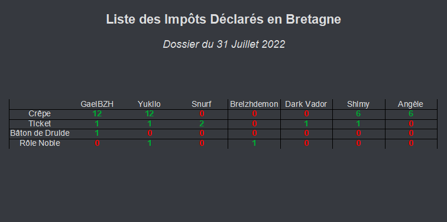
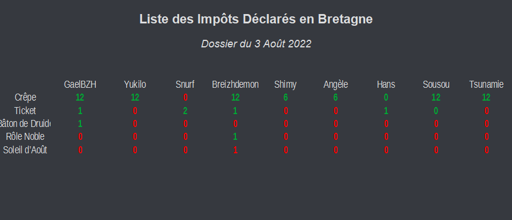
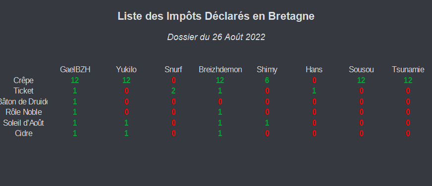
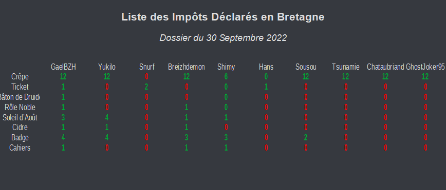
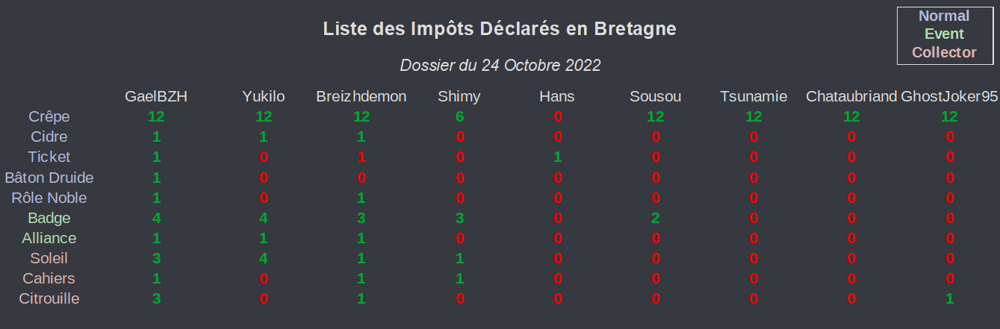
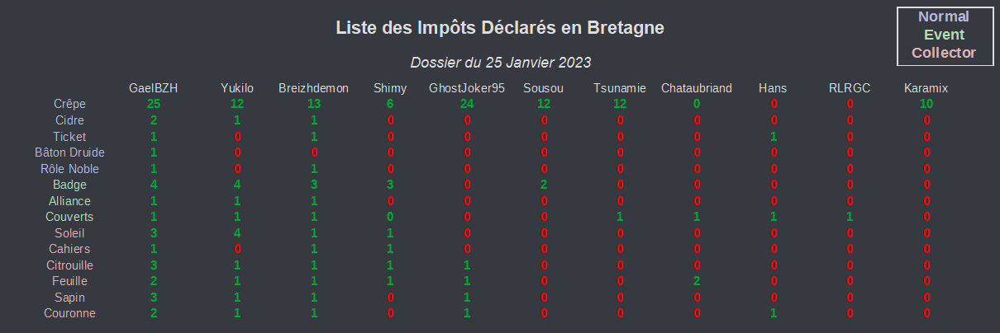
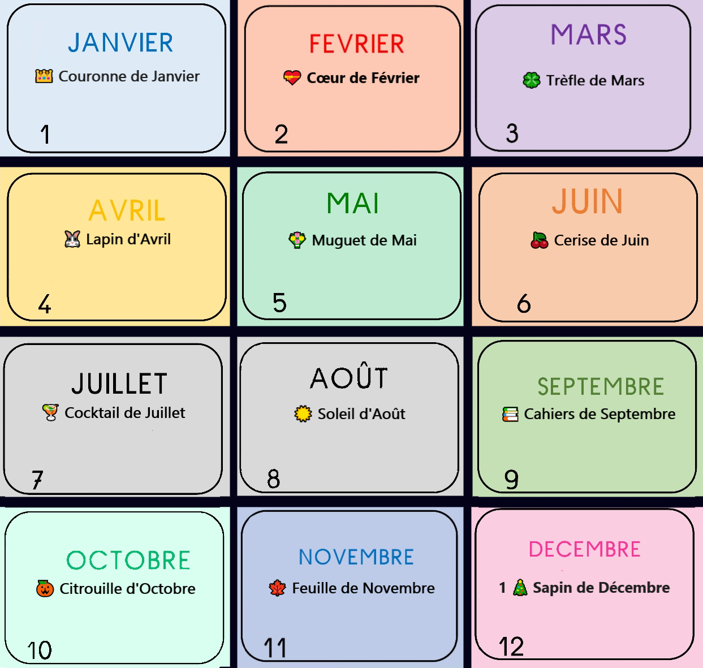

Bienvenue dans la Banque de l'Empire Breton. Ici vous avez accès aux archives des dossiers des contrôleurs des impôts. Cette page peut vous être utile si vous cherchez à démasquer un fraudeur. Vous pouvez retrouver ici les classements des personnes les plus riches de Bretagne, les objets déclarés par chaque membre du serveur, ou encore même les taux de remboursement des objets collectors. Vous pouvez également visionner la liste des articles collectors présents dans la boutique de l'Empire Breton.
I - Classement des Personnes les Plus Riches de Bretagne
Ci-dessous les archives de statistiques des personnes les plus riches de Bretagne. Cliquez sur le menu déroulant pour voir s'afficher le dossier d'archive. Pour voir le classement actuel, cliquez sur le bouton en dessous de la liste.
Ci dessous les archives des impôts déclarés en BretagneCliquez sur le menu déroulant pour voir s'afficher le dossier d'archive. En dessous se trouve la liste des objets collectors mensuels de l'Empire Breton.
Afficher les Statistiques (2) 📊
31 Juillet 2022
3 Août 2022
26 Août 2022



30 Septembre 2022
24 Octobre 2022
25 Janvier 2023



Liste des Objets collectors :

👑 Couronne de Janvier (1)
💝 Cœur de Février (2)
🍀 Trèfle de Mars (3)
🐟 Poisson d'Avril (4)
💐 Muguet de Mai (5)
🍒 Cerise de Juin (6)
🍹 Cocktail de Juillet (7)
☀️ Soleil d'Août (8)
📚 Cahiers de Septembre (9)
🎃 Citrouille d'Octobre (10)
🍁 Feuille de Novembre (11)
🎄 Sapin de Décembre (12)
III - Taux de Remboursement des Objets Collectors
Ci dessous les archives des statistiques sur les taux de remboursement des objets collectors. Vous pouvez retrouver ci-dessous le prix actuel d'un objet collector ainsi que le taux de remboursement (%) de celui-ci. Cette section peut vous être utile si vous êtes commerçant et que vous souhaitez liquider vos stocks en excès d'objets collectors en les vendant à l'état moins cher que vous les avez achetés, mais avec tout de même une compensation financière.